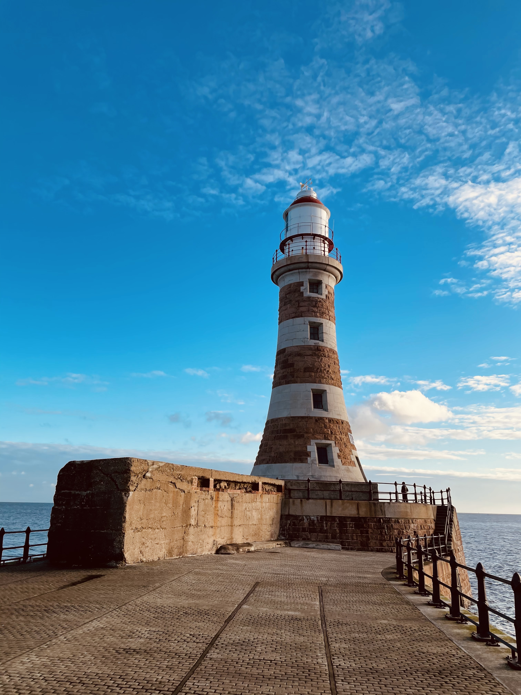

Welcome!
WearCare together with the University of Sundeland's cycling club would like to invite you to join our Big Cycle event around the city of Sunderland. Get your bike, your family and friends together for a fun and a healthy day out!
This 10mile (16.09km) long, friendly cycle will take place on 18th April 2021 at 9am.
About Us

We are WearCare, a health care company. We open and run a series of GP practices and doctors surgeries, as well as care homes and specialist care centres across the region. We thrive to provide the best service in the region and make sure all your healthcare needs are met. We promote active lifestyle and believe it's the foundation of phisical and mental health.
Sign up for our services below (Sunderland residents only).
Meet us at the Roker Lighthouse
Sights included in the ride:
- Roker Lighthouse
- Northern Spire Bridge
- Keel Square
- Stadium of Light
- Wearmouth Bridge
- St. Peter's Church
- St. Peter's Campus
Click here to explore the sights on Google Maps
After the ride
You're invited! No matter the abilities, speed or equipment. Think of it as a Parkrun on a bike, but with music and a picnic at the end plus a medal for the finishers.